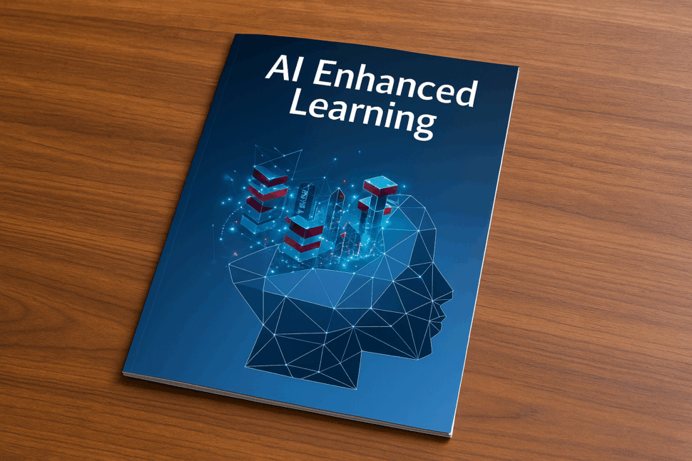
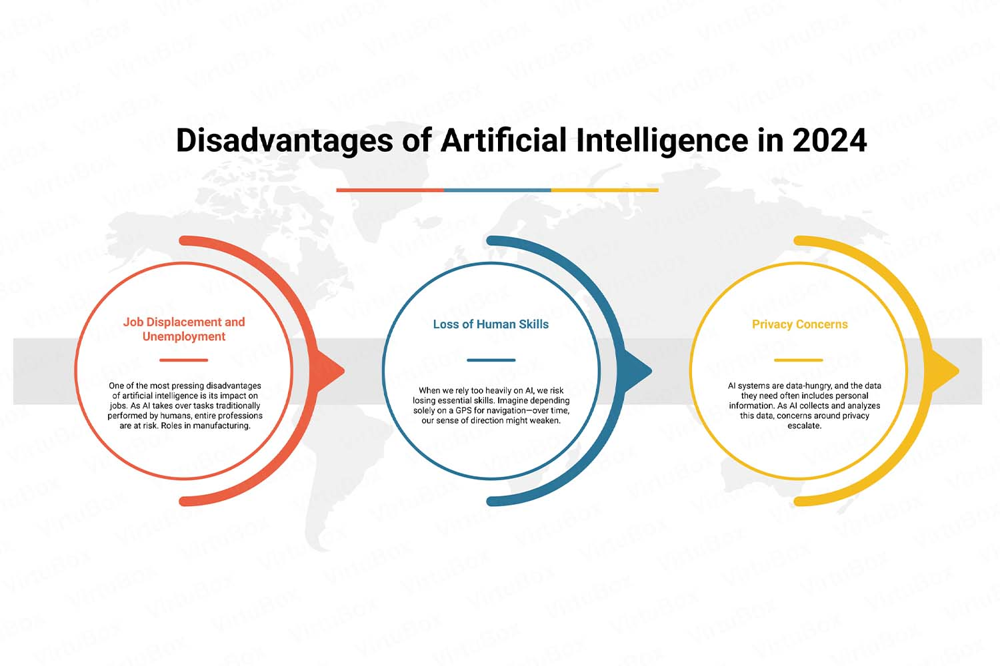

Featured Articles
The Rise of AI in Schools

Artificial intelligence tools are becoming common in modern classrooms.
Students now interact with learning platforms that can adapt to their
individual progress and learning styles.
Educational technology companies are developing systems capable of
analyzing student performance and providing targeted feedback.
These systems help teachers identify areas where students struggle.
With the rapid growth of AI, schools are exploring new ways to
integrate technology while maintaining strong academic standards.
Teachers are also learning how to guide students in using AI
responsibly so that technology supports learning instead of replacing
independent thinking.
AI Can Enhance Learning

Research from universities shows that artificial intelligence can
support personalized learning experiences for students.
AI tutors can provide explanations, examples, and practice exercises
based on a student's learning pace.
This allows educators to focus more on mentoring and guiding students
rather than repetitive instruction.
By combining human teaching with intelligent software, classrooms
can become more interactive and efficient learning environments.
The Downsides of AI Tools

While AI provides powerful assistance, experts warn that excessive
dependence may harm students’ ability to think critically.
Some students may rely on AI to complete tasks rather than developing
their own understanding of complex topics.
Schools must teach digital responsibility alongside AI usage.
Balanced instruction ensures students gain technological skills
while maintaining creativity and analytical thinking.
The Future of AI in K-12
Educational researchers believe AI will become a permanent part of
school systems worldwide.
Future classrooms may feature intelligent assistants that help
teachers manage lessons and track student progress.
This technology may create a more efficient and personalized learning
environment.
Students will likely interact with learning systems that adjust
difficulty levels and provide immediate feedback.
Government Support for AI Education
Governments around the world are investing in programs to promote
artificial intelligence education among young learners.
These initiatives aim to prepare students for future careers in
technology and digital innovation.
Policy makers recognize that AI literacy will be essential in the
next generation workforce.
Many education departments are already integrating AI awareness
into school curriculum and teacher training programs.
Balancing AI and Human Thinking
Education experts emphasize that AI should complement human learning,
not replace it.
Critical thinking, creativity, and problem solving remain essential
skills that technology cannot fully replace.
The challenge for schools is finding the right balance between
innovation and intellectual independence.
Responsible AI use can empower students while preserving the human
elements that make education meaningful.